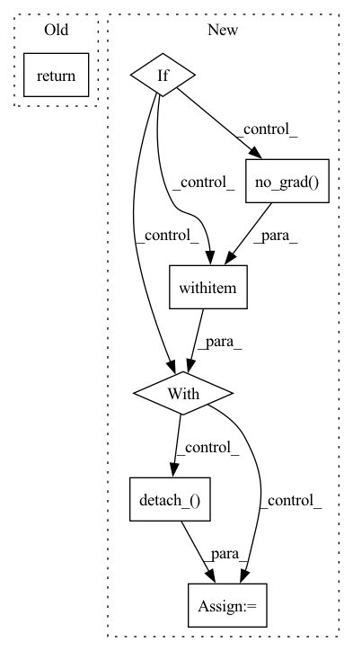

Pattern ID :19342
Before Change
request_obj = dist.broadcast(
tensor, self.local_rank, group=pg, async_op=True)
request_objects.append(request_obj)
return request_objects
def _recv_tensors_bcast(self, x, batch_idx, src, pg):
// TODO: Double buffering like p2pAfter Change
// tensor.detach_() // RuntimeError: Can"t detach views in-place. Use detach() instead
// FIXME: see https://github.com/pytorch/pytorch/issues/25814
// (its problematic with the tensor.grad, which we plan to avoid anyway.)
if is_grad:
with torch.no_grad() :
tensor = tensor.clone().detach_()
else:
tensor.detach_()
if self.verbose:In pattern: SUPERPATTERN
Frequency: 3
Non-data size: 7
Instances Fragment ID: 63077392
Project Name: saareliad/ftpipe
Commit Name: 1700dc3f0c7fe3e4b196360d6b6e4d9e4cd5b74e
Time: 2019-12-24
Author: saareliad@campus.technion.ac.il
File Name: pipeline/communication/bcast.py
M Class Name: BCASTCommunicationHandler
N Class Name: BCASTCommunicationHandler
M Method Name: _send_tensors_bcast(5)
N Method Name: _send_tensors_bcast(4)
M Parent Class: SimpleCommBase
N Parent Class: SimpleCommBase
M File Name: pipeline/communication/bcast.py
N File Name: pipeline/communication/bcast.py
M Start Line: 27
M End Line: 37
N Start Line: 28
N End Line: 52
Before Change
t = self.sample_random_times(b, device = device)
img = decimal_to_bits(img)
return self.p_losses(img, t, *args, **kwargs)
// dataset classes
After Change
// this technique will slow down training by 25%, but seems to lower FID significantly
self_cond = None
if random() < 0.5:
with torch.no_grad() :
self_cond = self.model(noised_img, noise_cond).detach_()
// predict and take gradient step
pred = self.model(noised_img, noise_cond, self_cond) Fragment ID: 63077393
Project Name: lucidrains/bit-diffusion
Commit Name: 70044d12755081b62303081a44ee196b783efd1b
Time: 2022-08-17
Author: lucidrains@gmail.com
File Name: bit_diffusion/bit_diffusion.py
M Class Name: BitDiffusion
N Class Name: BitDiffusion
M Method Name: forward(2)
N Method Name: forward(2)
M Parent Class: nn.Module
N Parent Class: nn.Module
M File Name: bit_diffusion/bit_diffusion.py
N File Name: bit_diffusion/bit_diffusion.py
M Start Line: 599
M End Line: 602
N Start Line: 568
N End Line: 587
Before Change
super().__init__()
def forward(self, x):
return x
After Change
// this technique will slow down training by 25%, but seems to lower FID significantly
self_cond = None
if random() < 0.5:
with torch.no_grad() :
self_cond = self.model(noised_img, noise_level).detach_()
// predict and take gradient step
pred = self.model(noised_img, noise_level, self_cond) Fragment ID: 63077389
Project Name: lucidrains/chroma-pytorch
Commit Name: aed1623c205056b5a530d116d30f647eb6693b14
Time: 2022-12-04
Author: lucidrains@gmail.com
File Name: chroma_pytorch/chroma_pytorch.py
M Class Name: Chroma
N Class Name: Chroma
M Method Name: forward(2)
N Method Name: forward(2)
M Parent Class: nn.Module
N Parent Class: nn.Module
M File Name: chroma_pytorch/chroma_pytorch.py
N File Name: chroma_pytorch/chroma_pytorch.py
M Start Line: 11
M End Line: 11
N Start Line: 506
N End Line: 536